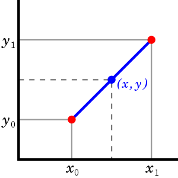
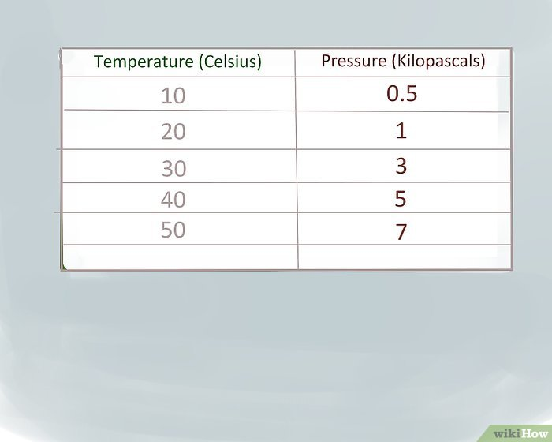
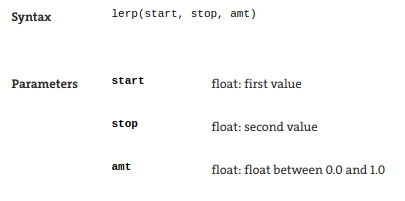

Desenhando Doideras com Python: Interpolação Linear
Bernardo Fontes
58º Encontro do PUG-PE
Recife/PE
10 de Abril de 2019
## Roteirinho
- Explicando Processing
- Explicando interpolação linear
- Utilizando esteticamente a interpolação linear
## Processing
- Uma IDE que usa Java para servir como um **sketchbook**
- Ideal para programadores, estudantes e artistas visuais por conta de sua **API simples e versátil**
- Possui um **modo Python** ([Jython](http://www.jython.org/) por baixo dos panos)
- Desenhos baseados em um sistema de coordenadas de até 3 dimensões
## Exemplo 001
```
def setup():
size(800, 800)
def draw():
# drawing a rectangle
x, y, w, h = 10, 20, 100, 200
fill(color(255, 0, 0))
rect(x, y, w, h)
# drawing a circle
x, y, w, h = 300, 500, 200, 200
fill(color(0, 255, 0))
ellipse(x, y, w, h)
# drawing a line
x1, y1 = width / 2, height / 2
x2, y2 = width, height
line(x1, y1, x2, y2)
# using python
from random import uniform
for x in range(width / 2, width, 20):
y = 50
y_offset = uniform(50, 200)
line(x, y, x, y + y_offset)
noLoop()
```
Interpolação Linear
O que é?

Interpolação Linear

Qual a pressão quando a temperatura está em 37.8ºC?
Interpolação Linear no Procesing

## Controlando a Estética
- `lerp` controlando apresentações
- `lerp` controlando movimentos
- `lerp` controlando estruturas
- `lerpColor` controlando cores